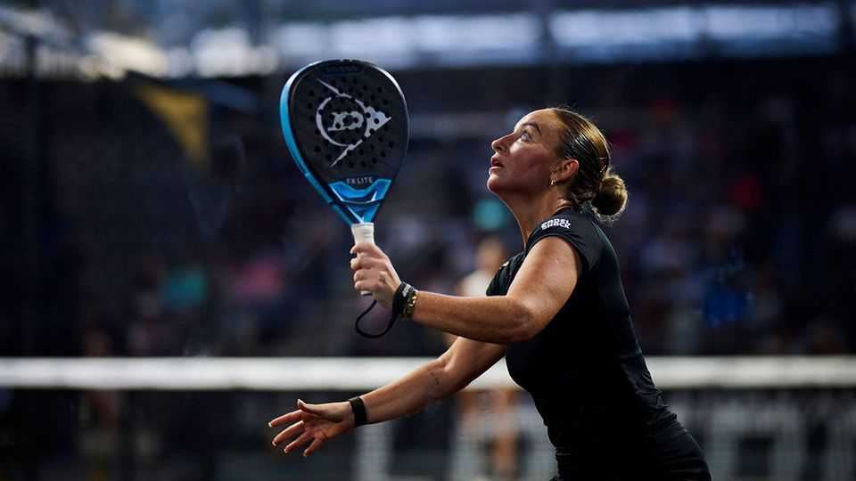

Millions play padel. Will anyone watch it?
Britain is a test case

Aug 6th 2026
AS WIMBLEDON’S manicured lawns take a break after last month’s tennis championships, London is playing host to a tournament for a newer racket sport. Padel, a hybrid of tennis and squash, has backers who hope to take it into the big league. The London leg of Premier Padel, the Qatar-funded professional circuit, on August 4th-9th is one of 26 elite tournaments in the calendar and the first to be held in Britain. Padelistas from 15 countries (the leading players are Spanish and Argentine) are competing for a share of the €479,000 ($550,000) prize pot.
“It’s the right moment for a tournament in London,” says Luigi Carraro, the president of the International Padel Federation (FIP). Padel is one of the fastest-growing sports in Britain. About 1m people have played it at least once in the past year, according to the Lawn Tennis Association (LTA), which governs padel in Britain—up from 15,000 in 2019. The sight of brightly coloured padel courts encased in glass is increasingly familiar: in 2020 Britain had 87 of them; now it has over 2,000.
Britain’s boom is part of a global one: padel has 35m players in 150 countries, according to the FIP. After starting in Mexico in 1969, the sport took off in Spain and Argentina before spreading across Europe and South America. Mr Carraro wants it to become an Olympic sport, possibly for the 2032 games in Brisbane.
Why the boom? Padel’s underarm serve, forgiving rackets and small courts make it easy to learn. Money talks, too. Roughly three padel courts can fit into the footprint of a single tennis court, creating more cash for clubs. The explosion in demand has meant Britain’s courts are among the busiest, and priciest, in the world. The median fee of an indoor court is £44 ($59) per booking, though some in London can cost £100 an hour.
But a sport that is fun to play is not necessarily fun to watch. Rob Mitchell, Premier Padel’s commercial director, dismisses such concerns. The 4,000 or so tickets for the final in London quickly sold out.
The sport still has some catching up to do. Tennis had 5.6m players in Britain at last count in 2023, and Wimbledon had total prize money of £64m this year. The LTA is optimistic that the rise of padel is complementing not cannibalising tennis. But fashions change: Wimbledon itself began life as a croquet club. ■